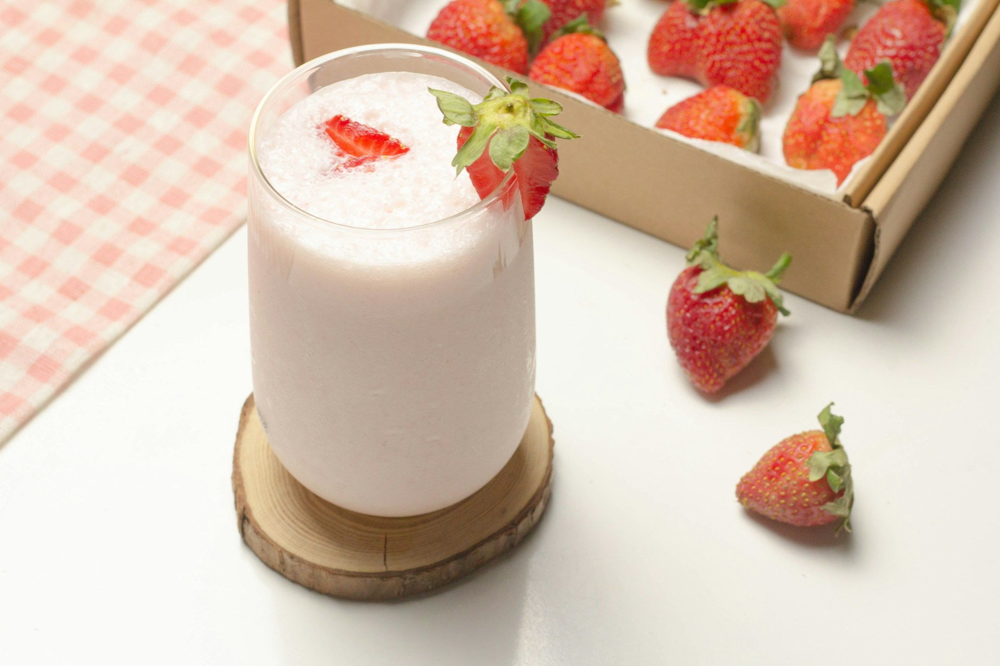

Home
Strawberry Milkshake Recipe

Photo by Trinh Le Nguyen Ai on Unsplash
Description
A simple recipe to make a strawberry milkshake. Recipe sourced from allrecipes.com
Ingredients
- 1/4 cup of milk
- 7 hulled and sliced strawberries
- 1/4 cup of vanilla ice cream
- 1/4 cup of white sugar
Directions
- Place the strawberries, milk, ice cream, and sugar into a blender. Blend until smooth.
- Enjoy!